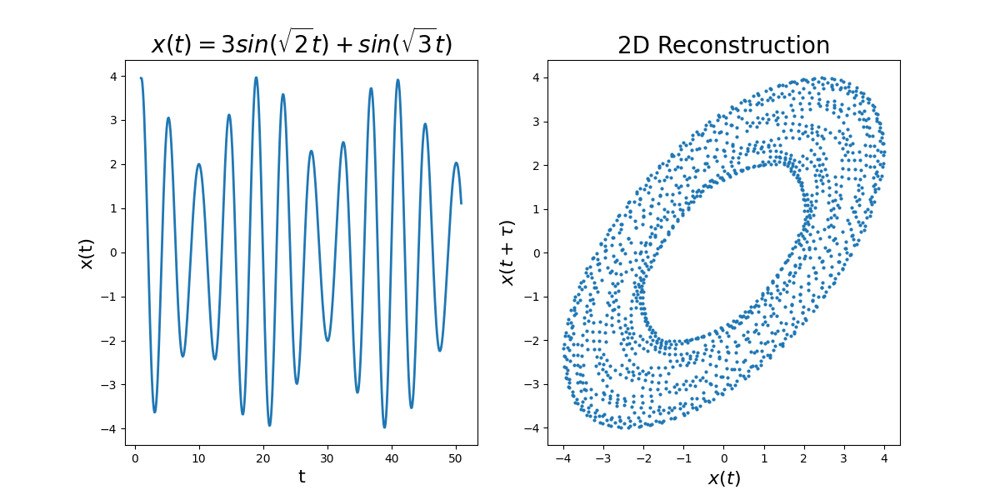

During my graduate course in dynamical systems, I explored the Takens theory of phase space reconstruction. Takens (1981) outlines a method for determining whether or not a set of data can be attributed to a strange attractor. By time sampling the data, one can create a phase space diagram that, for systems governed by a strange attractor, forms a distinctive torus like shape. With proper selection of the number of dimensions and time sampling interval, this method works even for noisy systems.
Above is a simple phase space reconstruction for a nonchaotic system. The Takens reconstruction method also works for complicated systems, see below.

Above we have the phase space reconstruction of an N-body system made up of two "stars," heavier objects, and one "planet," a lighter object. After simulation, gaussian noise was added to the data. Again, the Takens reconstruction produces an open shape, but due to the complexity of the system and added noise, this shape is not as perfectly circular as with the simpler system.